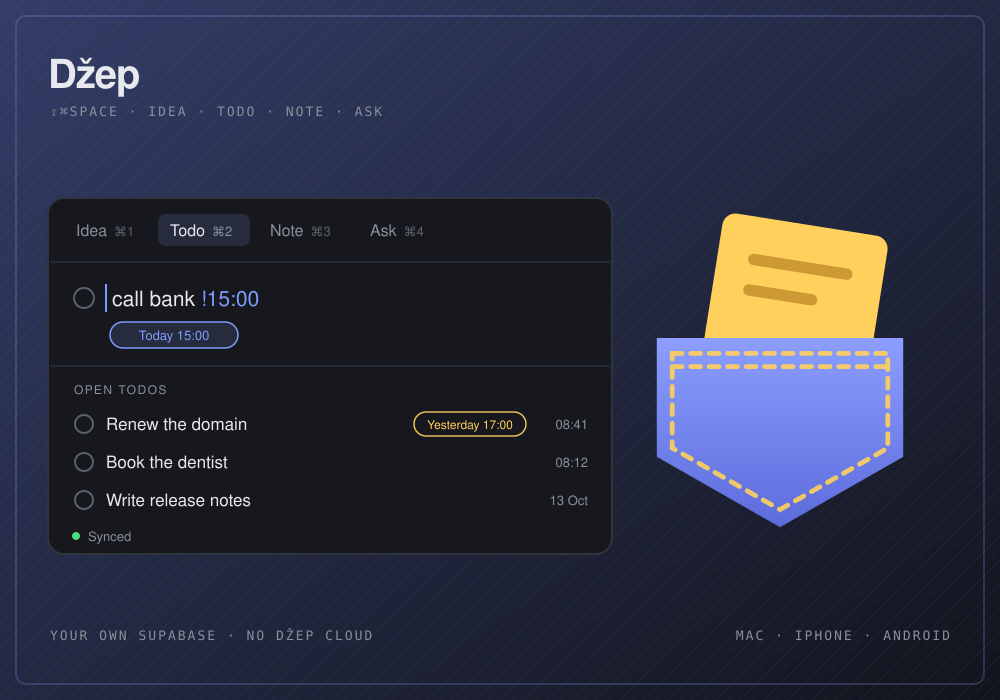
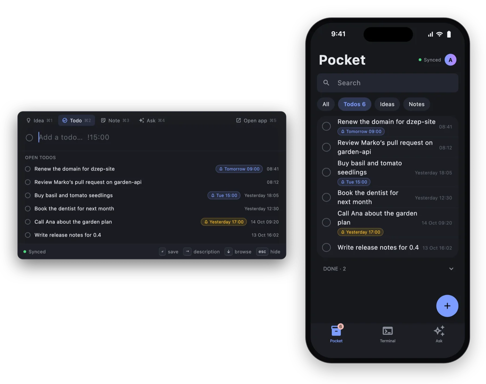
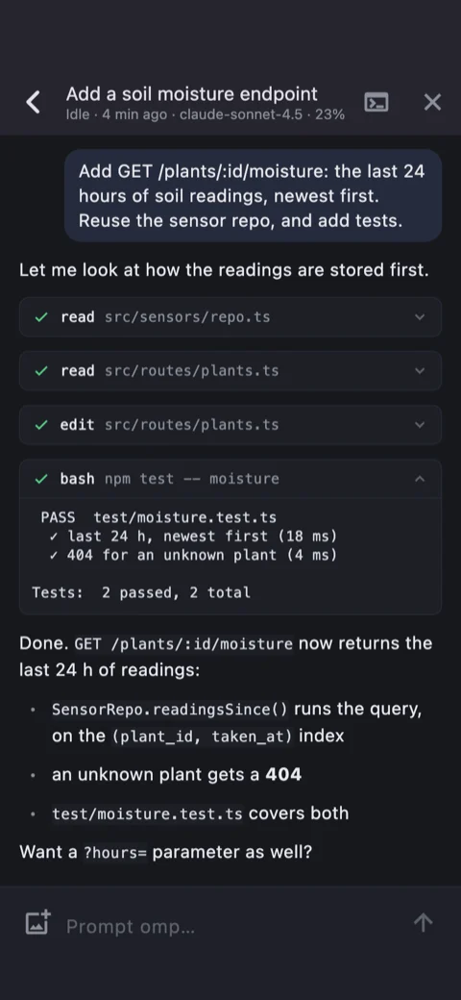

A pocket for ideas, todos and notes, on your own server.
Džep is a Mac menu-bar app with an ⇧⌘Space popup, plus iPhone and Android apps. They sync through a free Supabase project that you own. There is no Džep cloud.
From the phone you can also drive the omp and Claude Code sessions running on your Mac. Džep is Croatian for “pocket”, said roughly “jep”.
v0.4.0 · macOS 13 or later · notarized DMG · MIT

Press ⇧⌘Space anywhere on the Mac
The popup opens in the mode you used last, with its field ready. ⌘1 to ⌘4 switch modes, ↵ saves (or sends, in Ask), Esc hides it. The menu-bar icon shows how many todos are open.
Idea ⌘1
A title and an optional description.
@projectin the title files it under that project.Todo ⌘2
End it with
!and a time to get a reminder on every device. Tick it off on one and it's done on all.Note ⌘3
Free text, first line as the title, saved as you type. ⌘P floats it in a small window over everything.
Ask ⌘4
A short streamed chat with the AI you connected, with up to four images per question. Chats continue on any device.
Reminders, written into the todo
| Write | Reminds you |
|---|---|
!15:00 !9.30 !3pm | At that time today, or tomorrow if it's already past |
!tomorrow !fri | That day at 9:00 |
!mon 14:30 | The next Monday at that time |
!30m !2h !1d | That long from now |
- Main window
- Todos, Ideas (grouped by project), Notes and Ask, searchable from the keyboard, with Undo on delete.
- Todos widget
- On the desktop or in Notification Center, ticking todos off without opening the app (macOS 14 or later).
- In your coding agent
/idea,/doand/notein omp and Claude Code save straight to Džep, filed under the current repo's name, even while the agent is working.
In the app
The same todos on the Mac and the phone, and a coding session followed from the phone.

One list, everywhere

A session as a conversation
Rendered by the apps' own screenshot tests: the real screens, on made-up data
On the phone
The iPhone and Android apps do the same things, each in its platform's look: iOS on the iPhone, Material 3 on Android.
- Todos, ideas and notes in one list, open todos first. Filter to one kind, search all three, swipe to tick off or delete.
- Terminal
- The tab the app opens on, with your Mac's coding sessions and terminal windows. More below.
- Ask
- The same chats as on the Mac. Paste an image or pick one from your photos.
- Widgets
- Todos ticks todos off from the Home Screen, New idea opens the add field. Reminders come with a Done action.
- Adding a phone
- No password and no GitHub on the phone. On the Mac, Settings › Set up phone… shows a QR code; the phone scans it and signs in. A code works once, for 10 minutes.
- Without the Mac
- Ideas, todos, notes, reminders and Ask live on your server, so the phone works with the Mac off. The Mac is only needed to add a phone and for Terminal.
Your Mac's coding sessions, from the phone
The Terminal tab shows each omp or Claude Code session on your Mac as a conversation. Prompt it (with images), stop a run, and answer its questions, tool approvals and plan reviews. You get a push when the agent finishes or needs you. Other terminal windows show as live screens you can type into, and + opens a new session in one of your projects.
| Terminal | What works from the phone |
|---|---|
| kitty, WezTerm, tmux | Everything: sessions, live screens in color, keys and answers, closing windows |
| iTerm2 | Everything except colors |
| Ghostty | Sessions and keys, no screen; answer questions on the Mac |
| Terminal (macOS) | Sessions and screens in whole lines; answer questions on the Mac |
Your Mac has to be awake, with Džep running and Terminal from phone turned on. It is off by default. While it is on, Džep keeps an idle Mac from sleeping, but a closed lid without an external display ends it. Sessions travel over a Realtime channel only your account can join, and nothing on it is stored. Claude Code needs version 2.1.287 or later.
Your server, not mine
Open Džep on the Mac and click Set up my server. The wizard takes about five minutes and needs a free Supabase account, which hosts the server, and a GitHub account to sign in with. An AI key for Ask is optional and can be added later.
- Your data
- Everything you write lives in your Supabase project, behind row-level security. The apps hold only its publishable key.
- Only you sign up
- GitHub is the only way in, and after the first account nobody else can sign up unless you allow their email.
- Your AI key
- A secret on your server. Questions go from your server to the OpenAI-compatible provider you chose (OpenAI, OpenRouter, Groq, DeepSeek and others); the apps never see the key.
- Encrypted pushes
- Your server encrypts every notification with a key only your phone has. My relay passes the ciphertext to Apple or Google and stores nothing.
- No tracking
- No analytics, advertising or tracking SDKs in the apps. Settings › Delete account removes everything. Read the privacy policy.
Status
- Mac
- Available. Version 0.4.0 is a notarized
Dzep-0.4.0.dmgon GitHub Releases, and it updates itself. macOS 13 or later. - iPhone
- Not in the App Store yet. TestFlight is coming. Until then you can build the phone app from source. iOS 17 or later, iPhone only.
- Android
- Not on Google Play yet. The same app, built from the same source. Android 8.0 or later.
- License
- Open source under the MIT license. Issues and pull requests are welcome on GitHub.
Support
I'm Danijel, the developer. For questions, setup trouble or ideas, email me and I'll get back to you, or open an issue on GitHub.
danijel@danyzmaj.comFound a security problem? Please report it privately through GitHub's vulnerability reporting, not in a public issue.